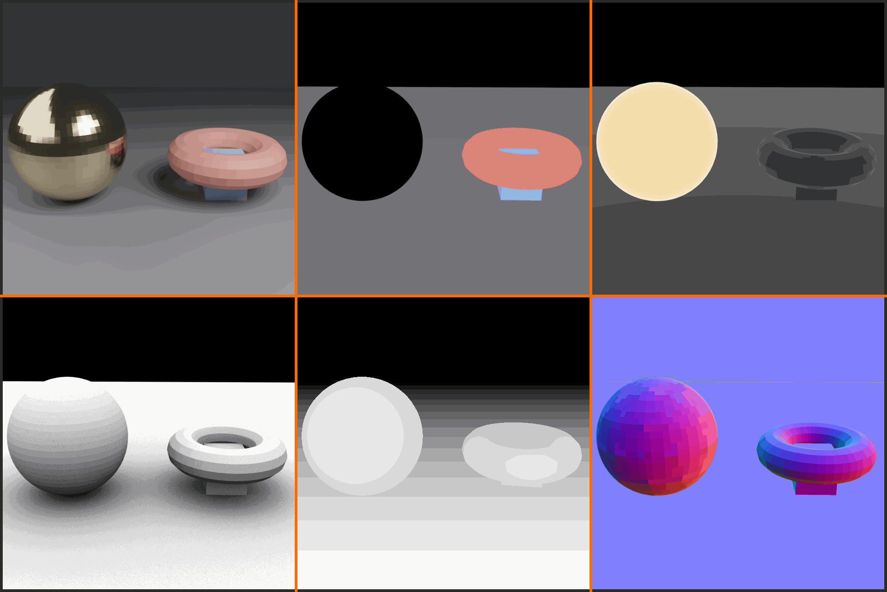
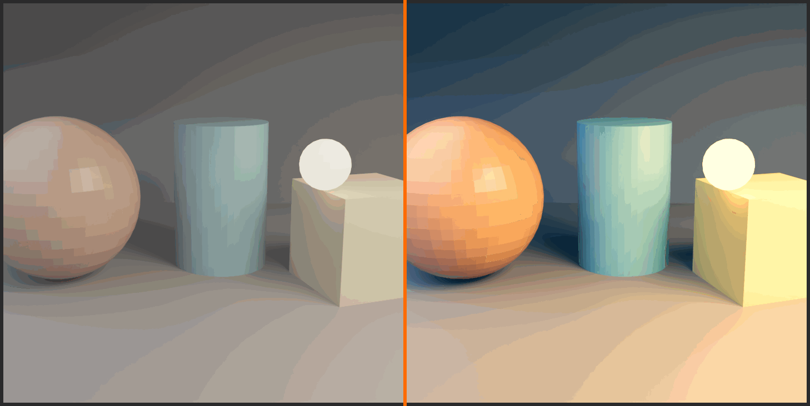
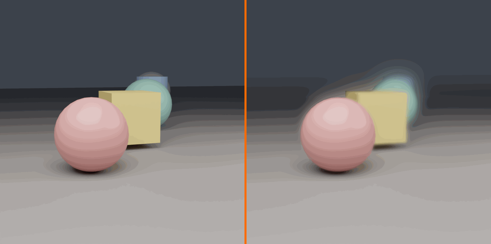
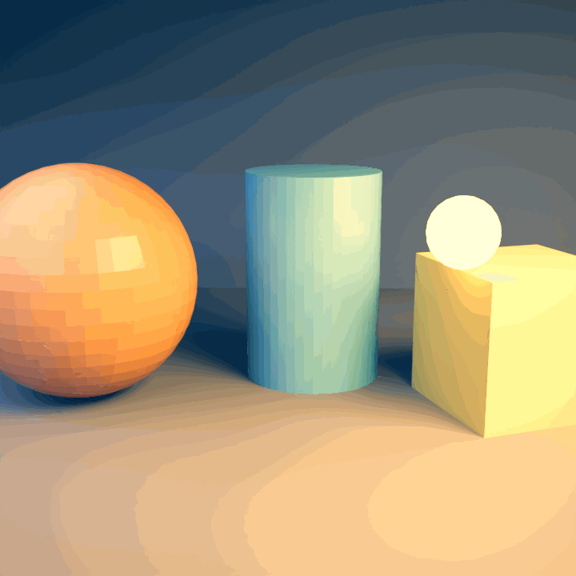
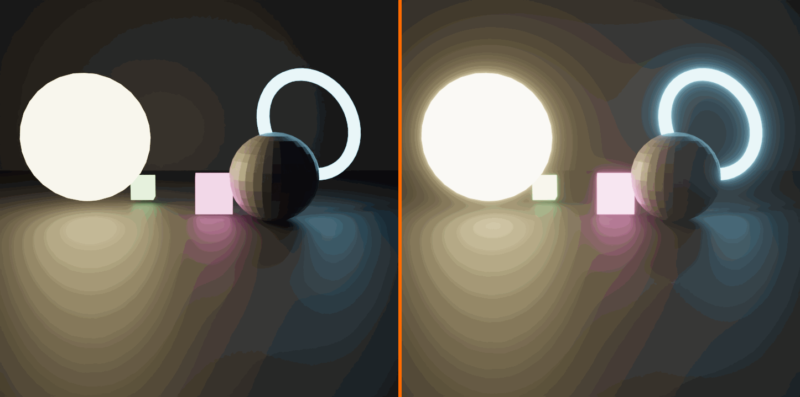

🎬 Lesson 43: Compositor Basics
Transform your renders into polished final images! Master Blender's Compositor to add color correction, glows, lens effects, and professional post-processing. Learn to work with render passes and create stunning results through compositing.
🎯 What You'll Learn
- Compositor fundamentals: Understanding nodes, workflow, and the compositing pipeline
- Render passes: Using separate render layers for maximum control
- Color correction: Adjusting exposure, contrast, color balance, and tone
- Filters and effects: Blur, glare, lens distortion, and atmospheric effects
- Masking and mixing: Combining elements and selective adjustments
- Professional workflows: Non-destructive editing and efficient compositing
⏱️ Lesson Info
- Estimated Time: 75-90 minutes
- Difficulty: Intermediate
- Prerequisites: Lesson 19 (Cycles Path Tracing), Basic rendering knowledge
- Projects: Color grade a render, add glows and atmosphere, multi-pass compositing
In This Lesson
🌟 Introduction to Compositing
Welcome to the final stage of the 3D pipeline—compositing! You've modeled beautiful objects, created stunning materials, set up perfect lighting, and rendered your scene. But the journey doesn't end there. Professional artists use compositing to transform good renders into spectacular final images. The Compositor is where you add that final 10% of polish that makes your work look truly professional. It's where science meets art in the digital darkroom!
Think of compositing like post-processing in photography. A photographer doesn't just take the photo and call it done—they adjust exposure, enhance colors, add vignettes, maybe some film grain. The same applies to 3D. The Compositor is your digital darkroom, your editing suite, your final opportunity to perfect the image. And the best part? Everything is non-destructive. You can experiment, adjust, and refine without ever changing your original render. Let's master this powerful tool!
What is Compositing?
💡 Compositing Defined
Compositing is the process of combining and enhancing rendered images to create the final output.
In Blender, compositing involves:
- Post-processing renders: Adjusting colors, contrast, exposure after rendering
- Combining elements: Layering multiple renders, effects, or images
- Adding effects: Glows, blurs, lens flares, depth of field, motion blur
- Color grading: Setting mood and atmosphere through color
- Working with passes: Using render passes for maximum control
- Fixing issues: Correcting problems without re-rendering
The Node-Based Approach:
Blender's Compositor uses a node system similar to Shader Editor and Geometry Nodes. You connect nodes to build a processing pipeline. Each node performs a specific operation—color adjustment, blur, mix, etc. The final output node shows your result. This approach is:
- Visual: See your processing pipeline as a flowchart
- Flexible: Easy to rearrange, modify, or bypass steps
- Non-destructive: Original render unchanged, all adjustments are live
- Professional: Industry-standard approach (Nuke, After Effects use similar systems)
Why Use the Compositor?
✅ Benefits of Compositing
1. Save Rendering Time
- Adjust colors, exposure without re-rendering (huge time saver!)
- Add effects that would take hours to render in 3D (glows, blurs)
- Experiment with different looks in seconds
- Example: Change sunset to midday lighting with color adjustment—no re-render!
2. Maximum Control
- Separate control over different elements (lights, shadows, reflections)
- Adjust specific objects without affecting others
- Fine-tune every aspect of the image
- Example: Make character brighter without changing background
3. Professional Effects
- Glows and glares for lights and emissive objects
- Atmospheric effects (fog, haze, god rays)
- Lens effects (distortion, chromatic aberration, vignette)
- Film grain and stylization
- These look better and render faster in post!
4. Color Grading and Mood
- Set emotional tone through color (warm=welcoming, cool=sterile)
- Match photography styles (cinematic, vintage, HDR)
- Ensure consistency across multiple renders
- The "film look" comes from compositing!
5. Fix Problems
- Too dark? Adjust exposure in comp instead of re-lighting and re-rendering
- Colors off? Color correct in seconds
- Need sharper image? Apply sharpening filter
- Spot fixes without touching 3D scene
🎬 Industry Insight: In film and high-end visualization, compositing is where magic happens. VFX artists spend more time in compositing software (Nuke, After Effects) than in 3D software. Why? Because compositing offers precision control, speed, and flexibility. A good compositor can make mediocre renders look amazing. A bad compositor can ruin perfect renders. This final stage is where you prove your artistic eye!
When to Use Compositing vs. Render Settings
🤔 The Decision Framework
| Task | Best Approach | Why |
|---|---|---|
| Lighting changes | 3D Scene (re-render) | Need accurate shadows, reflections, GI |
| Color adjustment | Compositor | Fast, non-destructive, easy to experiment |
| Depth of Field | Can do either | Render DOF = accurate but slow; Comp DOF = fast but approximate |
| Glows and glares | Compositor | Much faster, more control, better-looking |
| Motion blur | Render (or Comp) | Render = accurate; Comp = fast approximation |
| Exposure/brightness | Compositor | Instant adjustment, no re-render |
| Combining scenes | Compositor | Layer multiple renders, images, effects |
| Film grain | Compositor | Fast, adjustable, no render impact |
General Rule: If it affects light simulation (shadows, reflections, indirect lighting), do it in 3D and re-render. If it's a post-process effect (color, blur, glow), do it in Compositor. When in doubt, try Compositor first—it's faster!
The Compositing Pipeline
💡 Understanding the Workflow
Standard compositing workflow:
- Render your scene
- Get a good base render (proper lighting, materials)
- Enable necessary render passes
- Render at final resolution (or test at lower res)
- Load render in Compositor
- Switch to Compositing workspace
- Enable "Use Nodes" and "Backdrop"
- Render image automatically available
- Color correction first
- Fix exposure, contrast, white balance
- Get the foundation right before adding effects
- Think of this as your "develop the negative" stage
- Add effects and enhancements
- Glows, blurs, sharpening
- Atmospheric effects
- Each effect is a new set of nodes
- Final polish
- Vignette, film grain, lens effects
- Final color grade and mood adjustment
- The subtle touches that complete the look
- Output final image
- Viewer node shows result in Compositor
- File Output node saves processed image
- Or render again to bake compositing into final output
Exposure, Contrast] C --> D[Add Effects
Glows, Blurs] D --> E[Final Polish
Vignette, Grain] E --> F[Output
Final Image] style A fill:#999,stroke:#333,stroke-width:2px,color:#fff style C fill:#2196F3,stroke:#333,stroke-width:2px,color:#fff style F fill:#4CAF50,stroke:#333,stroke-width:2px,color:#fff
🎯 Ready to Transform Your Renders?
The Compositor is the secret weapon of professional 3D artists. It's where good becomes great, where renders become art. You're about to learn techniques that separate amateur work from professional results. The best part? Most of this is fast and fun—you'll see results immediately and can experiment freely. Let's dive into Blender's compositing workspace!
🖥️ The Compositor Interface
Let's get familiar with your new creative playground! The Compositor interface is similar to Shader Editor and Geometry Nodes—you work with nodes in a visual editor. But there are some unique features and workflows specific to compositing. Understanding the interface thoroughly means you'll work faster and more confidently. We'll explore every panel, every button, and every workflow optimization. By the end of this section, you'll navigate the Compositor like a pro!
Accessing the Compositor
✅ Getting Started
Method 1: Switch to Compositing Workspace (Recommended)
- Look at the top of Blender's window (workspace tabs)
- Click "Compositing" workspace tab
- Result: Automatically configured layout with:
- Node Editor (Compositor) in main area
- Image viewer at top
- Properties panel on right
- This is the fastest way to start compositing!
Method 2: Manual Setup (For Custom Layouts)
- In any editor, click the editor type icon (top-left corner)
- Select "Compositor" from the menu
- Editor changes to Compositor node view
- You may need to enable "Use Nodes"
First-Time Setup (Do This Once):
- In Compositor editor, check the box: "Use Nodes" (top header)
- Check the box: "Backdrop" (shows your image in background)
- You'll see two default nodes: "Render Layers" and "Composite"
- These checkboxes stay enabled once set!
The Compositor Layout
💡 Understanding the Interface Components
1. Node Editor (Main Area)
- Purpose: Where you build your compositing node tree
- Navigation:
- Middle Mouse = Pan view
- Scroll = Zoom in/out
- Ctrl + Tab = Zoom to fit selected nodes
- Home = Frame all nodes
- Adding nodes: Shift + A (opens Add menu)
- Selecting: Click nodes, B for box select, A to select all
- Connecting: Click and drag from output socket to input socket
2. Backdrop (Background Image)
- Purpose: Shows your composited image directly in the node editor
- Enable: Check "Backdrop" in header (highly recommended!)
- Controls:
- V = Toggle backdrop visibility
- Alt + V = Fit backdrop to view
- Can zoom backdrop independently from nodes
- Why it's great: See results live while building node tree!
- Shows output of: Any Viewer node you add
3. Header Bar (Top of Editor)
- Editor type icon: Switch editor types
- "Use Nodes" checkbox: Enable/disable node system
- "Backdrop" checkbox: Show/hide backdrop image
- View menu: Navigation and display options
- Select menu: Selection tools
- Add menu: Add new nodes (or Shift+A)
- Node menu: Node operations (duplicate, delete, etc.)
4. Sidebar (N Panel)
- Toggle: Press N to show/hide
- Item tab: Properties of selected node
- Tool tab: Various compositor tools
- View tab: View settings and annotations
- Most useful: Item tab for detailed node settings
Key Nodes You'll Always Use
✅ The Essential Node Set
Input Nodes (Where Images Come From):
Render Layers
- What it is: Brings your rendered image into Compositor
- Created by default when you enable Use Nodes
- Outputs: Image, Alpha, plus all render passes you enabled
- Scene/Layer selection: Choose which scene and view layer to use
- This is your starting point!
Image Node
- What it is: Load external images or image sequences
- Use for: Background plates, overlays, reference images
- Supports: JPG, PNG, EXR, image sequences, video files
- Add: Shift+A → Input → Image
Output Nodes (Where Results Go):
Composite
- What it is: The final output node (must have one!)
- Created by default when you enable Use Nodes
- Purpose: Whatever connects here becomes your final render
- When you render: The composited result saves to file
- This is your endpoint!
Viewer Node
- What it is: Preview node for checking intermediate results
- Purpose: See what's happening at any point in your node tree
- Shows in: Backdrop and Image Editor
- Usage: Connect any image output to Viewer to see it
- Shortcut: Select node, then Ctrl+Shift+Click to auto-add Viewer
- Pro tip: Use multiple Viewers to compare different stages!
File Output Node
- What it is: Save images to specific files/locations
- Use for: Saving intermediate results, different versions, passes
- Configure: File path, format (PNG, EXR, etc.)
- Power feature: Save multiple outputs from one render!
Understanding Sockets and Connections
💡 Node Socket Types
In Compositor, sockets have colors indicating data type:
Yellow Sockets (Color/RGBA):
- Contains: Full color image data (Red, Green, Blue, Alpha)
- Most common type in Compositor
- Examples: Image output, Color input, final composited result
- 4 channels: RGB for color, A for transparency
Gray Sockets (Value):
- Contains: Single-channel grayscale data (0.0 to 1.0)
- Use for: Masks, factors, alpha channels, depth
- Examples: Mix factor, blur amount, mask data
- Can connect to: Yellow sockets (converts to grayscale)
Blue Sockets (Vector):
- Contains: Multi-dimensional data (X, Y, Z or RGB)
- Use for: Motion vectors, normals, coordinates
- Examples: Speed pass for motion blur, normal pass
- Less common in basic compositing
Connection Rules:
- Yellow to Yellow: Full color data passes through
- Gray to Gray: Value data passes through
- Gray to Yellow: Grayscale becomes RGB (same value in all channels)
- Yellow to Gray: RGB converts to grayscale (luminance calculation)
- One output, many inputs: Can connect one output to multiple input sockets
- One input, one connection: Only one connection per input (new replaces old)
Essential Keyboard Shortcuts
✅ Speed Up Your Workflow
| Shortcut | Action | When to Use |
|---|---|---|
| Shift + A | Add new node | Building your node tree (most used!) |
| X or Delete | Delete selected nodes | Removing unwanted nodes |
| Shift + D | Duplicate nodes | Copy existing setups |
| Ctrl + Shift + Click | Add Viewer node | Quick preview of any node output |
| M | Mute selected nodes | Temporarily disable effects (bypass) |
| Ctrl + J | Add Frame | Organize nodes into groups |
| Ctrl + G | Make node group | Create reusable composite setups |
| Tab | Enter/exit node group | Edit node groups |
| V | Toggle backdrop | Show/hide background image |
| Alt + V | Fit backdrop to view | Frame backdrop image |
| Home | Frame all nodes | View entire node tree |
| . (Period) | Frame selected | Zoom to selected nodes |
Pro Workflow Tip: Ctrl+Shift+Click on ANY node to instantly add a Viewer showing its output. This is the fastest way to check what any node is producing. Use it constantly while building!
Working with the Backdrop
💡 Mastering the Background Preview
The Backdrop is your real-time preview system. Here's how to use it effectively:
Basic Controls:
- Enable: Check "Backdrop" in header (do this first!)
- Toggle visibility: Press V to show/hide quickly
- Fit to view: Alt+V frames the backdrop image
- Zoom backdrop: Same as node view (scroll wheel)
- Pan backdrop: Middle mouse drag
What Appears in Backdrop:
- Output of any Viewer node you add
- If no Viewer: shows output of last-modified image node
- Default: Shows Render Layers output (your render)
- Switch views: Connect different nodes to Viewer
Backdrop Tips:
- Keep it visible: Always work with backdrop on (instant feedback!)
- Use Viewer nodes liberally: Check intermediate results constantly
- Compare before/after: Toggle node mute (M) to see difference
- Zoom in: Check details up close when adjusting
- Full view: Zoom out to see overall composition
Backdrop Overlays:
- In header: "Backdrop" dropdown menu has options
- Move: Drag backdrop around independently
- Fit: Alt+V or use menu option
- Zoom: Use mouse wheel (backdrop and nodes can have different zoom!)
Your First Compositor Setup
🎯 Quick Start Exercise
Let's set up your Compositor properly and see it work!
- Prepare a Simple Scene:
- Default scene (cube, camera, light) is perfect
- Or open any scene you've created before
- Make sure you can render it (F12)
- Render the Scene:
- Press F12 or click Render → Render Image
- Wait for render to complete
- You'll see the rendered image
- Don't close render window yet!
- Switch to Compositing Workspace:
- Click "Compositing" tab at the top
- Layout changes to compositing setup
- Enable Nodes:
- In Compositor editor header, check "Use Nodes"
- Check "Backdrop"
- You'll see two nodes: Render Layers and Composite
- See Your Render:
- Your rendered image should appear in backdrop!
- If not: Render again (F12) with Compositor open
- The render flows through: Render Layers → Composite
- Test a Simple Node:
- Position cursor between the two nodes
- Shift+A → Color → RGB Curves
- Connect: Render Layers Image → RGB Curves Image
- Connect: RGB Curves Image → Composite Image
- Adjust RGB Curves (drag on curve)
- Watch backdrop update in real-time!
- Add a Viewer (Pro Move):
- Ctrl+Shift+Click on RGB Curves node
- Viewer node automatically added and connected
- Backdrop now shows RGB Curves output
- This is how you preview any node!
Congratulations! You've set up your first Compositor node tree and made a live adjustment. The power of compositing is now at your fingertips. Everything from here builds on this basic flow: Render → Process → Output.
💡 Pro Workflow Insight: Professional compositors keep their node trees organized from the start. Use Frames (Ctrl+J) to group related nodes, add Reroute nodes (Shift+A → Layout → Reroute) to keep connections clean, and label important nodes. A messy node tree is hard to debug and modify later. Spend 5 seconds organizing now to save 30 minutes later when you need to adjust something!
🎓 Interface Mastered!
You now know your way around the Compositor interface! You understand the layout, the essential nodes, socket types, keyboard shortcuts, and the crucial Backdrop system. This foundation lets you work efficiently. The interface itself is simple—the power comes from the nodes you connect. Speaking of which, let's dive into render passes, which unlock the full potential of compositing!
🎨 Understanding Render Passes
Here's where compositing becomes truly powerful! Render passes are separate components of your final image—diffuse color, shadows, reflections, ambient occlusion, each rendered separately. Think of it like a layered Photoshop file: instead of one flattened image, you get individual layers you can adjust independently. Want brighter reflections without changing anything else? Adjust the reflection pass. Need softer shadows? Modify the shadow pass. This granular control is what professionals use to achieve perfect results!
The beauty of render passes is that you get all these components in a single render. Blender calculates everything once, then splits the data into separate passes. You recombine them in the Compositor with full control over each element. This approach is industry-standard—VFX studios, animation houses, architectural visualization firms all work this way. It's slower to set up initially but saves massive amounts of time during the inevitable adjustments and revisions. Let's master this professional technique!
What Are Render Passes?
💡 Breaking Down the Render
A render pass is a separate output containing specific information about the scene.
Think of a Rendered Image as:
- Combined result of many lighting components
- Direct lighting + indirect lighting + shadows + reflections + AO + emission + ...
- All baked together into one final image
- Problem: Can't adjust individual components after render
With Render Passes:
- Each component rendered separately
- You recombine them in Compositor
- Advantage: Adjust each component independently!
- Example: Make shadows 30% lighter without re-rendering
Common Render Passes:
- Combined: The normal render (all passes mixed together)
- Diffuse: Base color without lighting
- Specular: Shiny reflections from lights
- Transmission: Light passing through transparent objects
- Emission: Light emitted from glowing materials
- Environment: Reflections from environment (HDRI)
- Shadow: Shadow information
- AO (Ambient Occlusion): Contact shadows in crevices
- And many more!
Full Control] I --> J[Final Image] style A fill:#999,stroke:#333,stroke-width:2px,color:#fff style H fill:#3a3a3a,stroke:#333,stroke-width:2px,color:#fff style J fill:#4CAF50,stroke:#333,stroke-width:2px,color:#fff
Enabling Render Passes
✅ How to Enable Passes (Cycles)
Location: Properties Panel → View Layer Properties (icon looks like stacked layers)
- Find View Layer Properties:
- Right side panel in default layout
- Icon: Two stacked rectangles
- Click to open View Layer settings
- Scroll to "Passes" section:
- You'll see checkboxes for different pass types
- Organized by category (Data, Light, etc.)
- Enable passes you want:
- Check boxes next to desired passes
- Each enabled pass adds to render time slightly
- Only enable what you'll actually use
- Render with passes enabled:
- Next render includes all enabled passes
- Available in Compositor from Render Layers node
Important Note: Passes are Cycles-specific. Eevee has different pass options (fewer available). For this lesson, we focus on Cycles passes as they're more comprehensive and industry-standard.
Essential Render Passes Explained
💡 The Most Useful Passes
Data Passes (Geometric Information):
Z (Depth):
- Contains: Distance from camera to each pixel
- Appears as: Grayscale (white=close, black=far)
- Use for: Depth of field, fog, atmospheric effects
- Essential for: Post-process DOF (faster than render DOF)
- Enable: Data → Z
Mist:
- Contains: Depth-based gradient (customizable range)
- Appears as: Grayscale gradient based on distance
- Use for: Atmospheric haze, distance fog
- Configure in: World settings (Mist Pass section)
- Enable: Data → Mist
Normal:
- Contains: Surface normal directions
- Appears as: Colorful (RGB = XYZ directions)
- Use for: Relighting, edge detection, technical masks
- Advanced technique: Can fake lighting changes in post
- Enable: Data → Normal
Object Index / Material Index:
- Contains: Unique ID for each object/material
- Use for: Selecting specific objects in comp for adjustment
- Example: Brighten just the car without affecting background
- Setup required: Assign pass index numbers in object/material properties
- Enable: Data → Object Index / Material Index
💡 Light Passes (Lighting Components)
These separate different types of lighting:
Diffuse Direct / Indirect:
- Direct: Light hitting surfaces directly from lights
- Indirect: Light bouncing around (global illumination)
- Appears as: Colored images (the lit diffuse surfaces)
- Use for: Adjusting GI strength, controlling direct/indirect balance
- Enable: Light → Diffuse → Direct and/or Indirect
Glossy Direct / Indirect:
- Direct: Direct reflections (mirror-like, sharp)
- Indirect: Indirect reflections (environment reflections)
- Use for: Controlling reflection brightness and color
- Example: Make metal more/less reflective in post
- Enable: Light → Glossy → Direct and/or Indirect
Transmission Direct / Indirect:
- Contains: Light passing through transparent materials (glass)
- Direct: Light directly through transparent objects
- Indirect: Caustics and bounced transmitted light
- Use for: Adjusting glass/transparent object appearance
- Enable: Light → Transmission → Direct and/or Indirect
Emission:
- Contains: Light emitted from glowing materials
- Use for: Adjusting glow brightness, adding bloom/glare
- Perfect for: Controlling neon signs, screens, lights separately
- Enable: Light → Emission
Environment:
- Contains: Lighting from world environment (HDRI)
- Use for: Adjusting environment light strength/color
- Example: Make sky reflections more/less prominent
- Enable: Light → Environment
💡 Additional Useful Passes
Shadow:
- Contains: Shadow information
- Use for: Adjusting shadow strength/color separately
- Great for: Making shadows lighter/darker/warmer without re-render
- Enable: Light → Shadow
Ambient Occlusion (AO):
- Contains: Contact shadows in crevices and corners
- Appears as: Grayscale (white=exposed, black=occluded)
- Use for: Adding depth, enhancing details, darkening crevices
- Often added in post: Multiply over final image
- Enable: Data → Ambient Occlusion
Cryptomatte (Advanced):
- Contains: Automatic masks for every object and material
- Use for: Easy selection of any element in comp
- Professional feature: Industry-standard masking system
- Requires: Cryptomatte node in Compositor to use
- Enable: Data → Cryptomatte (Object, Material, Asset)
Working with Passes in Compositor
✅ Accessing and Using Passes
After enabling passes and rendering:
- Render Layers Node Shows All Passes:
- Each enabled pass appears as an output socket
- Yellow sockets (color passes) and gray sockets (data passes)
- Scroll down on Render Layers node to see all outputs
- Connect Passes to Viewer:
- Drag from any pass output to a Viewer node
- See what each pass contains in backdrop
- Explore your passes! Understand what each shows
- Typical Workflow - Recombining Passes:
- Start with individual light passes
- Mix them together with Add nodes
- Adjust individual pass colors/brightness before mixing
- Gives you control over each lighting component
Example: Adjusting Reflections:
Render Layers → Glossy Indirect (reflections)
→ Color Correction (make 50% brighter)
→ Add with other passes
→ Final Result
Example: Adding More Shadows:
Render Layers → AO Pass
→ ColorRamp (adjust intensity)
→ Multiply over Combined pass
→ Darker crevices, more depth
Practical Render Pass Setup
🎯 Workshop: Enable and View Passes
Let's set up render passes and see what they contain!
- Scene Preparation:
- Use default scene or any scene with materials and lights
- Make sure you're using Cycles render engine
- Have at least one material with some specularity/reflection
- Enable Essential Passes:
- Open Properties → View Layer Properties (layers icon)
- Scroll to "Passes" section
- Enable these passes:
- Data: Z, Mist (configure mist in World settings first)
- Data: Normal
- Data: Ambient Occlusion
- Light: Emission (if you have emissive materials)
- Light: Diffuse → Direct and Indirect
- Light: Glossy → Indirect (for reflections)
- Render the Scene:
- F12 to render
- Wait for completion
- All enabled passes are now available!
- View Passes in Compositor:
- Switch to Compositing workspace
- Enable "Use Nodes" and "Backdrop"
- Look at Render Layers node—see all the output sockets!
- Explore Each Pass:
- Add Viewer node (Shift+A → Output → Viewer)
- Connect different passes to Viewer one at a time
- Look at Z: See depth information (grayscale)
- Look at Normal: See colorful surface normals
- Look at AO: See contact shadows
- Look at Diffuse Direct: See direct lighting only
- Look at Glossy Indirect: See reflections only
- Compare Combined vs. Passes:
- View "Combined" output (normal render)
- View individual passes
- Notice Combined = all passes added together
What You've Learned: Each pass isolates specific information. Z shows depth, AO shows occlusion, Diffuse shows base lighting, Glossy shows reflections. Understanding what each pass contains is crucial for using them effectively. Now you can adjust these components individually!

Common Render Pass Workflows
✅ Professional Pass Usage Patterns
1. Basic Pass Setup (Good for Most Projects):
- Enable: Combined (default), Z, AO
- Why: Combined for main image, Z for DOF, AO to enhance depth
- Workflow: Use Combined, add AO overlay, use Z for depth effects
- Fast and effective!
2. Full Control Setup (Maximum Flexibility):
- Enable: All light passes (Diffuse, Glossy, Transmission, etc.)
- Why: Control every lighting component separately
- Workflow: Rebuild image from passes, adjust each before combining
- Slower to set up, ultimate control
3. Character/Product Focus:
- Enable: Object Index, Cryptomatte, AO, Z
- Why: Easy selection and adjustment of specific objects
- Workflow: Use masks to adjust hero object without affecting environment
- Perfect for product visualization
4. Atmospheric Scene:
- Enable: Z, Mist, Emission, Environment
- Why: Control depth effects, fog, glows separately
- Workflow: Use Z/Mist for fog, Emission for glows, adjust atmosphere
- Great for exterior scenes, sci-fi environments
💡 Performance Consideration: Each enabled pass adds minimal render time (a few percent typically). The real cost is memory—more passes = more data stored. For 4K renders with many passes, you'll need substantial RAM. Start with fewer passes, enable more as needed. You can always re-render with additional passes if you discover you need them during compositing!
⚠️ Common Pass Pitfalls
1. Forgetting to Enable Passes Before Render
- Problem: Rendered without enabling passes, they're not available in comp
- Solution: Always check View Layer Properties → Passes before rendering
- Create a checklist for your typical pass setup
2. Not Understanding Pass Content
- Problem: Using passes incorrectly because you don't know what they contain
- Solution: Always view each pass first (connect to Viewer)
- Understand what you're working with before adjusting
3. Wrong Pass Combination
- Problem: Adding passes when you should multiply, or vice versa
- Solution: Light passes (Diffuse, Glossy) = Add together
- Masks (AO) = Multiply over image
- Learn the correct blend mode for each pass type
4. Enabling Too Many Passes
- Problem: Enabled every pass "just in case," huge memory usage
- Solution: Enable only what you'll actually use
- You can always render again with more passes if needed
- Start minimal, add as you discover needs
🎓 Render Passes Mastered!
You now understand the power of render passes! You know what they are, why they're essential, which passes exist, and how to enable and access them. This knowledge unlocks professional-level control over your renders. Next, we'll explore the essential Compositor nodes you'll use to manipulate these passes and create stunning results. Time to build some node trees!
🔧 Essential Compositor Nodes
Now let's build your compositing toolkit! Just like Shader Editor has essential nodes (Principled BSDF, Mix, ColorRamp), the Compositor has its own set of must-know nodes. These are the building blocks you'll use in every project. Some adjust colors, others add effects, some combine images, and others extract specific information. Master these nodes and you can create virtually any post-processing effect. Let's explore the core nodes every compositor needs!
Color Nodes (Adjustment and Correction)
💡 The Color Manipulation Toolkit
RGB Curves (The Master Control)
- Location: Shift+A → Color → RGB Curves
- What it does: Adjust brightness, contrast, color balance with curves
- Power: Most versatile color correction node
- Four curves: C (Combined/Luminosity), R (Red), G (Green), B (Blue)
- Usage:
- Raise curve = brighten
- Lower curve = darken
- S-curve = increase contrast
- Adjust individual RGB = color correction
- Pro tip: This is your "go-to" for most color work!
Hue/Saturation/Value
- Location: Shift+A → Color → Hue Saturation Value
- What it does: Adjust hue shift, saturation, and brightness
- Parameters:
- Hue: Shift all colors (0.5 = opposite colors)
- Saturation: Increase/decrease color intensity (0=grayscale, 2=hyper-saturated)
- Value: Overall brightness adjustment
- Use case: Quick saturation boost, color shifts, desaturation effects
Bright/Contrast
- Location: Shift+A → Color → Bright/Contrast
- What it does: Simple brightness and contrast adjustment
- Simpler than RGB Curves but less flexible
- Parameters:
- Bright: -100 to +100 (overall brightness)
- Contrast: -100 to +100 (difference between darks and lights)
- Use case: Quick adjustments when you don't need curve precision
Color Balance
- Location: Shift+A → Color → Color Balance
- What it does: Adjust color tint in shadows, midtones, highlights separately
- Three sets of controls: Lift (shadows), Gamma (midtones), Gain (highlights)
- Each control: RGB sliders to add color tint
- Use case: Professional color grading, cinematic looks
- Example: Cool blue shadows, warm orange highlights (teal & orange look)
Gamma
- Location: Shift+A → Color → Gamma
- What it does: Adjust midtone brightness without crushing blacks/whites
- Value: 1.0 = no change, <1.0 = darken, >1.0 = brighten
- Use case: Subtle exposure adjustments that preserve detail
Exposure
- Location: Shift+A → Color → Exposure
- What it does: Simulates camera exposure adjustment (in stops)
- Exposure value: +1 = double brightness, -1 = half brightness
- Use case: Quick brightness fixes, HDR tone mapping
- Pro: Works like real camera exposure (photographers love this)
Filter Nodes (Effects and Processing)
✅ Essential Effect Nodes
Blur
- Location: Shift+A → Filter → Blur
- What it does: Softens image with various blur algorithms
- Types:
- Flat: Uniform blur (fastest)
- Gaussian: Natural, smooth blur (most common)
- Bokeh: Lens-style blur with configurable shape
- Variable Size: Can use Z pass to create depth-based blur (DOF!)
- Use cases: Depth of field, motion blur, softening, backgrounds
Glare
- Location: Shift+A → Filter → Glare
- What it does: Adds bloom/glow to bright areas
- Types:
- Ghosts: Lens flare artifacts
- Streaks: Star-like rays from bright spots
- Fog Glow: Simple glow/bloom
- Simple Star: Cross-shaped rays
- Threshold: Only affects pixels brighter than this value
- Use cases: Light glows, lens flares, magical effects, neon signs
- Pro tip: Use Fog Glow (threshold ~1.0) for subtle realistic bloom
Sharpen / Soften
- Location: Shift+A → Filter → Filter (then select type)
- Sharpen: Enhances edges, makes image crisper
- Soften: Subtle blur, smooths image
- Use case: Sharpen for extra clarity, soften for dreamy look
- Warning: Over-sharpening creates halos and artifacts!
Denoise
- Location: Shift+A → Filter → Denoise
- What it does: Removes render noise from Cycles renders
- Works with: Denoising Data pass (must enable in View Layer)
- Use case: Clean up grainy renders without increasing samples
- Huge time saver! Denoise in post instead of rendering 10x longer
Dilate/Erode
- Location: Shift+A → Filter → Dilate/Erode
- What it does: Expand (dilate) or shrink (erode) bright areas
- Use case: Modify masks, expand glows, adjust alpha edges
- Distance: Positive = dilate, negative = erode
Mix and Combine Nodes
💡 Layering and Blending Images
Mix (Alpha Over, Add, Multiply, etc.)
- Location: Shift+A → Color → Mix
- What it does: Combine two images using various blend modes
- Factor: 0 = Image 1 only, 1 = Image 2 only, 0.5 = 50/50 mix
- Essential Blend Modes:
- Mix: Simple blend between two images
- Add: Add pixel values (brightens, for light passes)
- Multiply: Multiply values (darkens, for AO/shadows)
- Screen: Opposite of multiply (brightens, for glows)
- Overlay: Contrast-enhancing blend
- Use cases: Everything! Combining passes, adding effects, layering
Alpha Over
- Location: Shift+A → Color → Alpha Over
- What it does: Layer one image over another using alpha channel
- Respects transparency: Transparent areas show background
- Use case: Compositing elements, overlaying graphics, titles
- Premul option: Handle pre-multiplied alpha correctly
Z Combine
- Location: Shift+A → Color → Z Combine
- What it does: Combine two renders with depth information
- Uses Z pass: Correctly layers objects by distance
- Use case: Combining separately rendered elements with correct depth
- Example: Render character and environment separately, combine with correct depth
Converter Nodes (Data Manipulation)
✅ Data Processing Nodes
ColorRamp
- Location: Shift+A → Converter → ColorRamp
- What it does: Remap values to colors/gradients
- Use cases:
- Control mask strength (adjust gradient)
- Threshold effects (tight stops = hard edges)
- False color visualization (depth → rainbow colors)
- Convert Z pass to usable mask range
- Same as Shader Editor ColorRamp but for images
RGB to BW (RGB to Black/White)
- Location: Shift+A → Converter → RGB to BW
- What it does: Convert color image to grayscale
- Uses luminance formula: Properly weighted conversion
- Use case: Create masks from color images, prepare for black/white output
Set Alpha
- Location: Shift+A → Converter → Set Alpha
- What it does: Replace alpha channel with custom mask
- Inputs: Image (color) + Alpha (grayscale mask)
- Use case: Apply custom masks to images, cutouts
Separate/Combine RGBA and HSVA
- Location: Shift+A → Converter → Separate/Combine
- Separate: Split image into R, G, B, A channels
- Combine: Merge channels back into image
- Use case: Process individual color channels, swap channels, effects
Math
- Location: Shift+A → Converter → Math
- What it does: Mathematical operations on value data
- Operations: Add, Subtract, Multiply, Divide, Power, and many more
- Use case: Adjust masks, normalize data, combine values
Mask and Matte Nodes
💡 Selection and Masking
ID Mask
- Location: Shift+A → Matte → ID Mask
- What it does: Create mask from Object Index or Material Index pass
- Setup: Assign pass index to objects/materials (in properties)
- Use case: Select specific objects for adjustment
- Example: Brighten only the car (index 1) without affecting road (index 2)
Cryptomatte
- Location: Shift+A → Matte → Cryptomatte
- What it does: Automatic masking system for any object/material
- Requires: Cryptomatte pass enabled in View Layer
- Pick objects: Click in viewport to select, creates mask automatically
- Professional tool: Industry standard for selection
- Massive time saver!
Double Edge Mask
- Location: Shift+A → Matte → Double Edge Mask
- What it does: Create mask from two edge masks (advanced)
- Use case: Rotoscoping, complex masking tasks
- Less common in basic compositing
Distort Nodes (Geometric Transformations)
✅ Transform and Distortion
Transform
- Location: Shift+A → Distort → Transform
- What it does: Move, rotate, scale image in 2D
- Parameters: X/Y position, rotation, scale
- Use case: Reposition elements, scale overlays, rotate images
Lens Distortion
- Location: Shift+A → Distort → Lens Distortion
- What it does: Add/remove barrel or pincushion distortion
- Dispersion: Chromatic aberration (color fringing)
- Use cases:
- Add lens realism (slight distortion + dispersion)
- Match CG to photographed background
- Remove distortion from photos
Scale
- Location: Shift+A → Distort → Scale
- What it does: Resize image (simpler than Transform)
- Space: Relative (percentage) or Absolute (pixels)
- Use case: Quick image scaling
Node Usage Patterns
💡 Common Node Combinations
Basic Color Correction Stack:
Render Layers
→ RGB Curves (fix exposure/contrast)
→ Hue/Saturation/Value (adjust saturation)
→ Color Balance (add color grade)
→ Composite
Add Glow Effect:
Render Layers
→ Glare (Fog Glow, threshold 1.0)
→ Mix (Screen mode) with original
→ Composite
Depth of Field:
Render Layers Image → Blur (Variable Size, use Z pass)
Render Layers Z → Blur Z input
→ Composite
Add AO Pass:
Render Layers Combined → Mix (Multiply)
Render Layers AO → ColorRamp (adjust) → Mix Factor
→ Composite
Mask-Based Adjustment:
Render Layers → RGB Curves (brighten)
Render Layers → ID Mask (select object) → Mix Factor
Original Render → Mix Image 1
Adjusted Render → Mix Image 2
→ Composite (only selected object brightened!)
🎨 Node Efficiency Tip: Start simple, add complexity gradually. Begin with Render Layers → Composite (just showing render). Add one adjustment (RGB Curves). Test. Add effect (Glare). Test. Build step by step, checking results constantly. This iterative approach prevents overwhelming complexity and helps you understand what each node contributes. You can always delete nodes that don't help!
🎓 Essential Nodes Learned!
You now have a solid toolkit of Compositor nodes! You understand color correction nodes (RGB Curves, HSV, Color Balance), effect nodes (Blur, Glare, Denoise), mixing nodes (Mix, Alpha Over), converters (ColorRamp, Set Alpha), and masking nodes (ID Mask, Cryptomatte). These are your building blocks. Next, we'll put them to use in a complete color correction workflow—taking a render from good to great with professional color grading!
🎨 Color Correction Workflow
Now for the art of color grading! This is where you transform technically correct renders into emotionally compelling images. Color correction isn't just about fixing problems—it's about setting mood, directing attention, and creating atmosphere. Think of it like developing film in a darkroom, or editing RAW photos—you're taking the "digital negative" from your render and processing it into the final image. Professional color grading can make the difference between amateur and cinematic results. Let's master this creative process!
The Color Correction Philosophy
💡 Understanding Color Grading Goals
Technical Correction (Foundation):
- Fix exposure: Image not too dark or too bright
- White balance: Colors appear neutral (whites are white, not blue/yellow)
- Contrast: Good separation between darks and lights
- Color accuracy: Materials look right (skin tones, familiar objects)
- This is your baseline before creative grading
Creative Grading (Artistry):
- Mood setting: Warm colors = cozy/happy, cool colors = sterile/sad
- Stylization: Cinematic look, vintage film, high-key, low-key
- Visual hierarchy: Bright areas draw attention, darken distractions
- Consistency: Multiple shots match in color and tone
- This is where your artistic vision shines!
The Golden Rule:
Fix first, enhance second. Always correct technical issues (exposure, white balance) before applying creative looks. A stylistic grade on a technically flawed image looks amateur. A stylistic grade on a technically sound image looks professional.
Professional Color Correction Workflow
✅ Step-by-Step Process
Step 1: Evaluate the Render
- Look at overall exposure (too dark/bright?)
- Check contrast (flat or too harsh?)
- Assess color balance (too warm/cool?)
- Identify problem areas (blown highlights, crushed blacks)
- Don't start adjusting yet—understand what needs fixing!
Step 2: Fix Exposure (Brightness)
- Node: RGB Curves or Exposure node
- Goal: Image has good overall brightness
- Check: Important details visible in both shadows and highlights
- RGB Curves approach: Adjust C (Combined) curve—raise for brighter, lower for darker
- Exposure approach: Adjust exposure value (works in stops like a camera)
Step 3: Set Contrast
- Node: RGB Curves (S-curve) or Bright/Contrast
- Goal: Good separation between darks and lights
- RGB Curves S-curve: Raise highlights (top-right), lower shadows (bottom-left)
- Creates: Punchy image with depth
- Warning: Too much = crushed blacks and blown whites!
Step 4: White Balance (Color Temperature)
- Node: RGB Curves or Color Balance
- Goal: Neutral colors look neutral (whites are white, not tinted)
- Too warm? Add blue (raise Blue curve or lower Red curve)
- Too cool? Add warmth (raise Red/lower Blue)
- Reference: Find something that should be neutral gray/white
Step 5: Saturation Adjustment
- Node: Hue/Saturation/Value
- Goal: Colors have appropriate intensity
- CG renders: Often too saturated—reduce slightly (0.9-0.95)
- Or boost: For vibrant, punchy looks (1.1-1.2)
- Desaturate completely (0.0): For black and white conversion
Step 6: Creative Color Grade (Optional)
- Node: Color Balance
- Goal: Apply stylistic color look
- Technique: Different colors in shadows vs. highlights
- Examples:
- Teal shadows + orange highlights (cinematic)
- Blue shadows + warm highlights (sunset feel)
- Consistent cool tone (tech/sci-fi)
Complete Color Grading Project
🎯 Workshop: Professional Color Grade
Let's grade a render from start to finish!
Setup:
- Render any scene (default scene works, or use existing render)
- Switch to Compositing workspace
- Enable "Use Nodes" and "Backdrop"
- You should see: Render Layers → Composite
Build the Grading Stack:
- Add RGB Curves (Primary Color Correction):
- Shift+A → Color → RGB Curves
- Insert between Render Layers and Composite
- Connect: Render Layers Image → RGB Curves Image
- Connect: RGB Curves Image → Composite Image
- Fix Exposure in RGB Curves:
- Select C (Combined) curve
- Click middle of curve, drag up to brighten (or down to darken)
- Goal: Overall image properly exposed
- Watch backdrop update in real-time
- Add Contrast (S-Curve):
- Still in RGB Curves, C curve
- Click near top-right, drag slightly up (brighten highlights)
- Click near bottom-left, drag slightly down (darken shadows)
- Creates S-shape: More contrast!
- Subtle is better: Don't overdo it
- Adjust White Balance (if needed):
- If image looks too warm (orange/yellow):
- Select B (Blue) curve, drag up slightly in midtones
- Or select R (Red) curve, drag down slightly
- If image looks too cool (blue):
- Do the opposite—reduce blue or add red
- Add Hue/Saturation/Value Node:
- Shift+A → Color → Hue Saturation Value
- Insert after RGB Curves
- Connect: RGB Curves → HSV → Composite
- Adjust Saturation:
- Reduce saturation slightly: 0.90-0.95
- Or boost for vibrant look: 1.10-1.20
- CG renders often benefit from slight desaturation
- Add Color Balance (Creative Grade):
- Shift+A → Color → Color Balance
- Insert after HSV node
- Connect: HSV → Color Balance → Composite
- Apply Cinematic Look (Teal & Orange):
- In Color Balance node:
- Lift (Shadows): Add cyan/teal (move Blue slider right, Green slightly right)
- Gamma (Midtones): Keep relatively neutral
- Gain (Highlights): Add warmth (move Red slider right, Yellow/Green slightly right)
- Result: Cool shadows, warm highlights—cinematic!
- Compare Before/After:
- Select any node in your stack
- Press M to mute (bypass)
- See original vs. graded
- Press M again to unmute
- Toggle to see your improvement!
Final Polish (Optional):
- Add subtle vignette (darken edges)
- Add film grain texture
- Slight sharpening
- These finishing touches add professional quality

Common Color Grading Styles
💡 Popular Looks and How to Achieve Them
1. Cinematic (Teal & Orange)
- Shadows: Cool teal/cyan
- Highlights: Warm orange/yellow
- Why popular: Complementary colors, separates skin tones from backgrounds
- Seen in: Blockbuster movies, action films, thrillers
- Apply with: Color Balance (cool Lift, warm Gain)
2. High-Key (Bright & Airy)
- Overall: Very bright, minimal shadows
- Contrast: Low to medium
- Colors: Desaturated, pastel
- Mood: Light, optimistic, clean
- Apply with: RGB Curves (raise entire curve), reduce saturation
3. Low-Key (Dark & Moody)
- Overall: Dark, dramatic shadows
- Contrast: High
- Colors: Often desaturated or monochromatic
- Mood: Mysterious, dramatic, noir
- Apply with: RGB Curves (lower curve), strong S-curve for contrast
4. Vintage/Film Look
- Contrast: Reduced (lifted blacks)
- Colors: Muted, slightly warm
- Highlights: Slightly desaturated
- Add: Film grain, slight vignette
- Apply with: RGB Curves (flatten S, lift blacks), reduce saturation in highlights
5. HDR/Hyperreal
- Contrast: Enhanced but not crushed
- Colors: Highly saturated
- Clarity: High (sharp, detailed)
- Mood: Vibrant, attention-grabbing
- Apply with: Strong S-curve, boost saturation (1.3-1.5), sharpen
✨ Filters and Effects
Color correction sets the foundation; effects add the polish that makes a render feel photographic or cinematic. This is where glows bloom around bright lights, backgrounds melt into soft depth of field, atmosphere fills the air with haze, and subtle lens imperfections sell the illusion that a real camera captured your scene. The Compositor makes every one of these effects fast, adjustable, and completely non-destructive. Best of all, most of them render in seconds rather than the hours they would cost in the 3D engine. Let's build a toolkit of the effects you'll reach for on almost every project.
Glare: Glow and Bloom
💡 The Glare Node
The Glare node is your single most useful effect node. It adds bloom, streaks, and lens flares to the bright regions of an image, exactly the way light behaves in a real lens.
Glare Types:
- Fog Glow: Soft, natural bloom radiating from bright areas — the most realistic option for everyday glow
- Streaks: Radial star-like rays; great for lamps, the sun, and sci-fi lights
- Ghosts: Lens-flare reflection artifacts along the light axis
- Simple Star: Clean cross-shaped rays, subtle and controllable
Key Settings:
- Threshold: Only pixels brighter than this value glow. Start near 1.0 so only true highlights bloom
- Mix: Blends between the original and the glare; leave negative-to-zero for subtlety
- Size: Controls how far the Fog Glow spreads
Recommended wiring: Render Layers → Glare (Fog Glow, threshold ~1.0) → Composite. For extra control, mix the glare back over the original with a Mix node in Screen mode so you can dial the intensity precisely.
Depth of Field and Blur
✅ Post-Process Depth of Field
Rendering depth of field in Cycles is accurate but slow. Faking it in the Compositor with the Z pass is fast and surprisingly convincing.
- Enable the Z pass in View Layer Properties before rendering
- Add a Blur node set to Variable Size, or use the dedicated Defocus node
- Feed the Z pass into the blur's size input so distant pixels blur more than near ones
- Tune the focal distance so your subject stays sharp while the background falls away
Blur types recap: Flat is fastest, Gaussian is the smooth natural default, and Bokeh reproduces the shaped highlights of a real aperture. For believable DOF, Bokeh with a circular or hexagonal shape reads best.

Atmosphere: Mist and Fog
💡 Adding Depth with Haze
Atmosphere separates foreground from background and adds a sense of scale. The Mist pass gives you a depth-based grayscale gradient you can turn into haze.
- Configure the Mist range in World Properties (start, depth) so the gradient covers your scene
- Enable the Mist pass in View Layer Properties
- Use the Mist pass as a Mix factor to blend a fog color over the image – distant areas receive more fog
- Keep it subtle: a little haze reads as atmosphere; too much reads as a mistake
Wiring: Render Layers Mist → ColorRamp (shape the falloff) → Mix Factor; fog color → Mix Image 2; render → Mix Image 1 → Composite.
Lens Effects: Vignette, Distortion, Grain
✅ The Finishing Touches
Vignette: Darkening the frame edges draws the eye inward. Build one with an Ellipse Mask (or a radial gradient) blurred and multiplied over the image at low strength.
Lens Distortion: The Lens Distortion node adds barrel or pincushion curvature plus Dispersion for chromatic aberration — the subtle color fringing of a real lens. A tiny amount sells realism; a large amount becomes a stylistic effect.
Film Grain: Overlay noise for a filmic texture. Generate it with a Noise texture (or a Movie Clip of grain) mixed over the image in Overlay or Add at low factor. Grain also helps hide banding in smooth gradients.
Order matters: apply lens distortion and grain last, after color grading, so they affect the finished look rather than being graded themselves.
Bloom] B --> C[Depth of Field
Z-based Blur] C --> D[Atmosphere
Mist Fog] D --> E[Lens Polish
Vignette, Grain] E --> F[Final Image] style A fill:#999,stroke:#333,stroke-width:2px,color:#fff style B fill:#2196F3,stroke:#333,stroke-width:2px,color:#fff style F fill:#4CAF50,stroke:#333,stroke-width:2px,color:#fff
🎬 Effects Discipline: The mark of an amateur composite is effects turned up to maximum. The mark of a professional is restraint. Add each effect, then pull it back until you almost can't see it — that is usually the right amount. Effects should support the image, never announce themselves.
🎓 Effects Toolkit Ready!
You can now add glows, depth of field, atmosphere, and lens polish — the effects that turn a clean render into a photographic one. Combined with your color grading skills, you have everything needed to finish an image professionally. Time to put it all together in two complete projects, starting with a full cinematic color grade.
🎬 Project 1: Cinematic Color Grade
Time to bring everything together on a real image. In this first project you'll take a flat, technically-correct render and grade it into a polished, cinematic frame from start to finish. We'll work in the deliberate order every professional follows: evaluate, correct, then style. By the end you'll have a repeatable node stack you can drop onto any render.
Project Setup
✅ Before You Start
- Render any scene with a clear subject and some highlights — a product on a surface, a character, or an interior all work well
- Switch to the Compositing workspace and enable Use Nodes and Backdrop
- Confirm the flow: Render Layers → Composite should already be wired
- Add a Viewer so you can watch every change live in the backdrop
The Grading Stack, Step by Step
🎯 Build It Node by Node
Step 1 — Evaluate: Study the render before touching anything. Is it flat? Too dark? Too warm? Note the problems so your corrections are intentional.
Step 2 — Exposure and Contrast (RGB Curves):
- Insert RGB Curves between Render Layers and Composite
- On the C curve, lift the middle to set overall brightness
- Add a gentle S-curve — raise the highlights, lower the shadows — for depth
Step 3 — White Balance:
- Find something that should be neutral gray or white
- If it's too warm, raise the Blue curve slightly; too cool, raise the Red curve
- Neutral whites are the anchor of a believable image
Step 4 — Saturation (Hue/Saturation/Value):
- CG renders often run hot – pull saturation to about 0.92
- Or push to 1.1 – 1.2 if the image wants more punch
Step 5 — Creative Grade (Color Balance):
- Lift / Shadows: nudge toward teal for cool, cinematic shadows
- Gamma / Midtones: keep close to neutral
- Gain / Highlights: nudge toward orange for warm highlights
- This complementary teal-and-orange split is the classic blockbuster look
Step 6 — Final Polish: add a subtle vignette and a whisper of film grain to seat the grade. Mute the whole stack with M to compare against the original, then unmute — the difference should feel like a finished frame.
Exposure + Contrast] B --> C[White Balance] C --> D[Hue Sat Value
Saturation] D --> E[Color Balance
Teal and Orange] E --> F[Vignette + Grain] F --> G[Composite] style A fill:#999,stroke:#333,stroke-width:2px,color:#fff style E fill:#2196F3,stroke:#333,stroke-width:2px,color:#fff style G fill:#4CAF50,stroke:#333,stroke-width:2px,color:#fff

💡 What to Watch For
- Skin tones: if your subject has skin, protect it — teal-and-orange looks great until faces turn orange
- Crushed blacks: keep a little detail in the darkest shadows unless the look demands pure black
- Blown highlights: pull back exposure before clipping bright areas to featureless white
- Compare often: toggle mute constantly so you never over-grade by drifting
🎓 Project 1 Complete!
You've taken a raw render through a full professional grade: corrected exposure, balanced color, tuned saturation, and applied a cinematic look with polish on top. Save this node stack — it's the backbone of nearly every grade you'll build. Next, we add light and atmosphere in Project 2.
🌟 Project 2: Glows and Atmosphere
Our second project layers light and air onto a graded image. You'll make emissive objects bloom, add depth with atmospheric haze, and finish with lens effects — the combination that gives sci-fi shots, neon scenes, and moody interiors their glow. This builds directly on Project 1: grade first, then add these effects on top.
Project Setup
✅ Before You Start
- Use a scene with bright or emissive elements — lamps, screens, neon, a bright window, or a sunset
- Enable the Mist pass (and configure its range in World Properties) if you want atmospheric depth
- Start from a graded image — ideally the Project 1 stack — so effects sit on a solid base
Step 1: Add the Glow
🎯 Bloom from Bright Areas
- Add a Glare node after your grade, set to Fog Glow
- Set the Threshold near 1.0 so only genuine highlights bloom
- Tune Size for how far the glow spreads
- For control, mix the glare back over the graded image in Screen mode and dial the factor
- Pro move: isolate the Emission pass and glare only that, so glowing materials bloom without washing out the rest of the frame

Step 2: Add Atmosphere
💡 Haze for Depth
- Take the Mist pass and shape its falloff with a ColorRamp
- Use it as the factor in a Mix node blending a pale fog color over the image
- Distant areas receive more fog, pulling the background back and the subject forward
- Keep the fog color and strength subtle – atmosphere should be felt more than seen
Step 3: Lens Finish
✅ Seal the Look
- Vignette: multiply a soft dark-edged mask over the frame to focus the eye
- Lens Distortion: add a touch of Dispersion for gentle chromatic aberration at the edges
- Film Grain: overlay low-strength noise so glow and fog don't look too clean
- Apply these last, after glow and atmosphere, so they unify the whole composite
Fog Glow] B --> C[Mist Mix
Atmosphere] C --> D[Vignette] D --> E[Lens Distortion
+ Grain] E --> F[Composite] style A fill:#999,stroke:#333,stroke-width:2px,color:#fff style B fill:#2196F3,stroke:#333,stroke-width:2px,color:#fff style F fill:#4CAF50,stroke:#333,stroke-width:2px,color:#fff
🎬 Combining Grade and Glow: Notice the pipeline order — grade first, then glow, then atmosphere, then lens polish. Reversing that order (glowing before grading, for instance) means your color adjustments fight the effects instead of guiding them. A clean, predictable order is what makes complex composites stay controllable.
🎓 Project 2 Complete!
You've layered glow, atmosphere, and lens finish onto a graded render — the full post-processing pipeline from flat output to finished frame. With Projects 1 and 2 under your belt, you can take any render the last 10% of the way to professional. Let's wrap up with best practices to lock it all in.
📋 Summary and Best Practices
🎓 What You've Mastered
Core Concepts:
- ✅ Understanding compositing and its role in the 3D pipeline
- ✅ Navigating the Compositor interface efficiently
- ✅ Working with render passes for maximum control
- ✅ Using essential Compositor nodes for every task
- ✅ Professional color correction and grading workflows
- ✅ Creating common visual effects (glows, blurs, atmosphere)
Key Takeaways:
- Compositing saves time: Adjust renders without re-rendering
- Render passes = control: Separate components for individual adjustment
- Node-based workflow: Visual, flexible, non-destructive
- Fix first, enhance second: Technical correction before creative grading
- Subtle is professional: Heavy-handed adjustments look amateur
✅ Compositor Best Practices
Workflow Efficiency:
- Always enable Backdrop for instant visual feedback
- Use Viewer nodes liberally (Ctrl+Shift+Click) to check intermediate results
- Organize with Frames (Ctrl+J) as complexity grows
- Name important nodes for clarity
- Build incrementally—add one node, test, add another
Quality Guidelines:
- Start with good renders—compositing enhances, doesn't fix fundamental issues
- Use appropriate passes for the adjustments you need
- Maintain image quality—avoid excessive processing
- Check results at 100% zoom (pixel-level quality)
- Compare before/after frequently (mute nodes with M)
Creative Process:
- Reference professional work for inspiration
- Understand the mood you're creating
- Subtle adjustments compound—don't overdo any single effect
- Take breaks and return with fresh eyes
- Save variations—try different looks
🚀 Next Steps
Continue Practicing:
- Grade every render you create
- Experiment with different looks and styles
- Study film and photography color grading
- Build a library of favorite node setups
Advanced Topics to Explore:
- Motion tracking and camera integration
- Green screen keying and compositing
- Advanced masking with rotoscoping
- Multi-pass compositing for VFX
- Cryptomatte advanced usage
- Custom node groups for reusable effects
🎬 Final Thought: The Compositor is where your 3D work becomes a finished image. It's the bridge between technical rendering and artistic vision. Every professional 3D artist—whether working in film, games, visualization, or advertising—uses compositing to perfect their work. The skills you've learned here are universal and industry-standard. Now go forth and transform your renders into works of art!